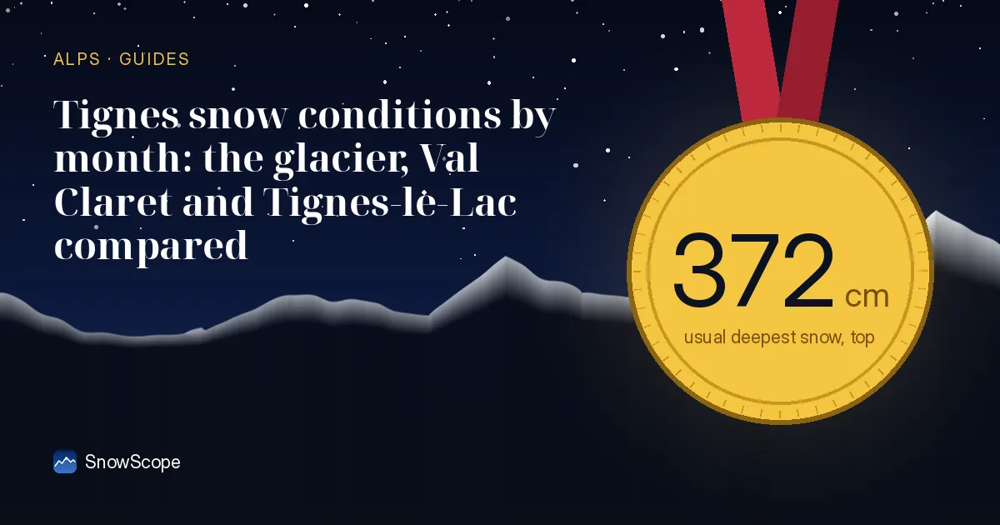

Tignes snow conditions by month: the glacier, Val Claret and Tignes-le-Lac compared
Tignes is one of the few Alpine resorts where the villages themselves sit above two thousand metres, and the linked area with Val d'Isère climbs from 1559 m to 3447 m on the Grande Motte glacier: 211 km of mapped runs, 84 lifts. Snow conditions are the reason people book it. Here is what they usually are, month by month, from our history of 46 past winters at three heights of the area.
See the live snow forecast for Tignes - Val d'Isère in the SnowScope appSnow depth, powder alerts and the 3D map, free.

Why height matters at Tignes
The base of the valley floor (1559 m) sees a winter peak of 117 cm. The Tignes villages sit at mid-mountain (2503 m), where the usual peak reaches 216 cm—almost twice as deep. The glacier at 3447 m holds 372 cm, the reason spring skiing here is famous. Each hundred metres of altitude changes your day.
The villages start the season already in serious snow country. This is different from lower resorts where you spend December waiting. Tignes-le-Lac and Val Claret live at an elevation where the snow is reliable from the start.
Autumn and early winter: the glacier opens first
First snow reaches mid-mountain by October 5 in half of the winters. November is thin at the base (13 cm is typical) but the glacier already holds 76 cm. This is when early-season skiers head up: the Grande Motte gets tracked while the village bowls are still brown.
December thickens the picture. Mid-mountain receives 80 cm in a usual December, the glacier 161 cm. Nine of every ten Decembers leave at least 43 cm at village height. The runs towards Val d'Isère are the ones where machine-made snow matters most during this month.
Winter's core: January through April
January brings 126 cm to mid-mountain, February 164 cm, March 179 cm. April reaches 178 cm—the deepest month at village height and when most of Europe has moved on. On the glacier, March shows 263 cm and April climbs to 297 cm.
The most reliable week of any year is mid-April (ISO week 16), when mid-mountain usually holds 186 cm and every past winter has beaten 50 cm. At village height, 50 cm or more lies on the ground for 21 weeks in nine of ten winters. This late-season consistency is what makes Tignes different from resorts that peak in January.
May and the end of the season
May sees the glacier still carrying 253 cm, while the villages begin to soften. Last snow at mid-mountain usually falls by June 19 in half of the winters. The snow season lasts 234 days at village height, 241 days on top—seven extra weeks of skiing for those who chase the mountains.
Early May can still offer the best spring skiing. The dates shift every year, but the glacier's staying power is consistent enough to plan around.
Depth month by month: what to expect
December: base 42 cm, mid-mountain 80 cm, glacier 161 cm. January: base 73 cm, mid-mountain 126 cm, glacier 213 cm. February: base 97 cm, mid-mountain 164 cm, glacier 239 cm.
March: base 94 cm, mid-mountain 179 cm, glacier 263 cm. April: base 58 cm, mid-mountain 178 cm, glacier 297 cm. These are the typical values across 46 past winters. Some years run thinner, others richer; the range is wide enough to plan for both.
How variable is Tignes?
At mid-mountain, the winter peak has ranged from 152 cm in the poorest season to 295 cm in the richest, around a median of 216 cm. The glacier swings from 257 cm to 627 cm. Last winter (2025–26) peaked at 222 cm at village height and 310 cm on the glacier.
The first 15 winters of our record saw glacier peaks of 401 cm. The last 15 winters averaged 377 cm—a small decline at the top. Mid-mountain went from 228 cm down to 213 cm. The villages have held steadier than the glacier, though both remain reliable by Alpine standards.
Tips for skiers
- Book late season (mid-March to April) for the most snow and the most reliable conditions at village height. Early season skiers must head high to the glacier.
- December is safest on the upper bowls and Grande Motte. The lowest runs back to Val d'Isère depend more on artificial snow.
- These depths are estimates from 46 past winters at three elevations, not resort measurements or daily forecasts. Check the official Tignes site for current lift status and groming.
- Review the Météo-France avalanche bulletin for the Haute-Tarentaise before skiing off-piste.
About these numbers
Resort snow depths are the deepest snow on the resort's upper slopes on the date shown; they are estimates for an area, not a measurement at one point. Forecasts can change. Always read the official avalanche bulletin before going off-piste.
Official avalanche bulletins: Météo-France – Bulletin d'estimation du risque d'avalanche
Cite this report
For research, teaching or the press: the numbers and charts are free to reuse under CC BY 4.0 with this citation.
SnowScope (2026), Tignes snow conditions by month: the glacier, Val Claret and Tignes-le-Lac compared, https://snowscope.app/blog/en/2026/11/tignes-snow-conditions-by-month-glacier-val-claret-tignes-le-lac.html, accessed 2026-11-22
SnowScope (Atlas Labs). (2026, November 22). Tignes snow conditions by month: the glacier, Val Claret and Tignes-le-Lac compared. SnowScope snow reports. https://snowscope.app/blog/en/2026/11/tignes-snow-conditions-by-month-glacier-val-claret-tignes-le-lac.html
BibTeX
@misc{snowscope2026tignessnowconditionsbymo,
author = {{SnowScope (Atlas Labs)}},
title = {Tignes snow conditions by month: the glacier, Val Claret and Tignes-le-Lac compared},
year = {2026},
month = nov,
howpublished = {\url{https://snowscope.app/blog/en/2026/11/tignes-snow-conditions-by-month-glacier-val-claret-tignes-le-lac.html}},
note = {Published 2026-11-22 11:14 UTC; accessed 2026-11-22}
}· CC BY 4.0 · Methods, data and tools →
Tignes - Val d'Isère: snow and temperature by height, this winter vs last (tools) →
Follow Tignes - Val d'Isère
Free: a message when fresh snow is coming, and the forecast every morning.
More snow reports

Twelve famous Alpine resorts ranked by their usual December snow depth at mid-mountain and the top, from 46 past winters, with the poor-December floor for each and the weeks that never fail.

From 20 EUR on an opening weekend to 6-day passes before Christmas: a calendar of the cheapest early-season ski deals in the Alps for 2026, with the snow you can expect.

Alpine day passes from 36 EUR: nine resorts compared by price, kilometres of runs and the snow they usually hold, to find the best day of skiing for your money.